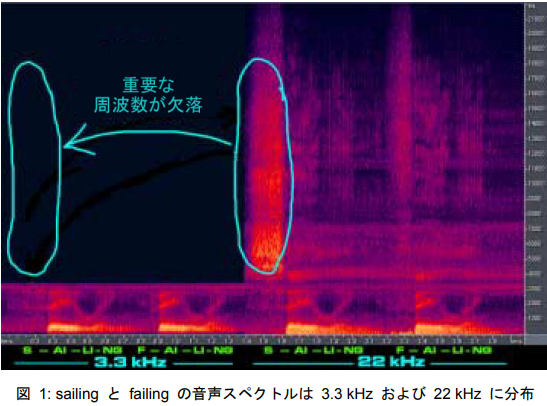

補足資料
知ってる方は無視してください_(:3 」∠ )_
- 信号処理の基礎
- 周波数解析
- 耳の話
- 声の話
1. 信号処理の基礎
1. 信号処理の基礎
サンプリング定理（標本化定理）
信号処理の基本の定理
読み取りたい信号の周波数 f の ２倍以上の周波数 fs で読み取らないとダメ f <= 2fs
守らないとエイリアシングが起きる 雑に言うとこれ以下の周波数でサンプリングすると波形が変わる
画像引用元:https://ednjapan.com/edn/articles/1207/27/news003.html
1. 信号処理の基礎
エイリアシング(折り返し雑音)の原理
サンプリング定理を守らないサンプリンレートで サンプリングするとエイリアシングが起こる 画像引用元:https://ednjapan.com/edn/articles/1207/27/news003.html
1. 信号処理の基礎
エイリアシングの例 - 階段
階段の１段を１つの波としてみる 階段の1段の高さが２ピクセル以下になるまで縮小すると 投影された画面上でサンプリング定理を満たさなくなる
画像 : Copyright © 2010 - 2019 SQUARE ENIX CO., LTD. All Rights Reserved.
1. 信号処理の基礎
エイリアシングの例 - 階段 ( 元の画像 3840x1080)
 （表示画面次第ではあるが）
すでにエイリアシングが起きている（はず）
（表示画面次第ではあるが）
すでにエイリアシングが起きている（はず）
画像 : Copyright © 2010 - 2019 SQUARE ENIX CO., LTD. All Rights Reserved.
1. 信号処理の基礎
確実に起こさせた例
windows10標準の画像閲覧アプリで開いた状態の スクリーンショット（縮小されて表示されている）
画像 : Copyright © 2010 - 2019 SQUARE ENIX CO., LTD. All Rights Reserved.
1. 信号処理の基礎
確実に起こさせた例
一部を拡大
階段のように横線しかない（レンガなので縦もあるが無視） 画像で斜めの模様が発生 サンプリング定理を守らない高周波成分が エイリアシングを起こして低周波のノイズとして混入 →実際とは違うサンプリング結果に（間違ったデータになる）
画像 : Copyright © 2010 - 2019 SQUARE ENIX CO., LTD. All Rights Reserved.
1. 信号処理の基礎
エイリアシングの例
別の例として細かい模様のあるものを動かした動画 (mp4版) を用意したのでご覧ください
画像 : Copyright © 2010 - 2019 SQUARE ENIX CO., LTD. All Rights Reserved.
1. 信号処理の基礎
エイリアシングの例
gif版 (pdfにしたら動かない)
画像 : Copyright © 2010 - 2019 SQUARE ENIX CO., LTD. All Rights Reserved.
1. 信号処理の基礎
エイリアシング
エイリアシングは何の対策もなしに 何かを観測したら起きる（人間の目や耳でも起きうる）
例） * 録音（普通対策されている） * 静止画撮影（モアレ効果とも呼ばれる） * 動画撮影（静止画で起きるエイリアシングも同時に発生）
1. 信号処理の基礎
エイリアシング 動画の場合
1. 信号処理の基礎
エイリアシング 動画の場合
1. 信号処理の基礎
エイリアシング 動画の場合
(影を見たらわかりますが) 熱で溶けたわけではないです_(:3 」∠ )_
画像 : CMOS + rolling shutter = floppy airplane propeller
1. 信号処理の基礎
エイリアシング 動画の場合
画像 : Airplane Prop + CMOS Rolling Shutter = WTF
1. 信号処理の基礎
エイリアシング 動画の場合 操縦席から見ると…
1. 信号処理の基礎
エイリアシング 動画の場合 プロペラ効果
1. 信号処理の基礎
なぜこんなことが起きるのか * ギターの弦 ストロボ効果 * プロペラ プロペラ効果
1. 信号処理の基礎
エイリアシング 動画の場合 ストロボ効果
動画ではシャッタースピードや露光時間が エイリアシングの原因となりうる
1. 信号処理の基礎
エイリアシング 動画の場合
- iPhone propeller aliasing
- Plane Propeller from iPhone
- Rolling shutter artifacts - Shutter speed test
- Propeller Aliasing
動画でも起きる
1. 信号処理の基礎
エイリアシングの対策
エイリアシングを起こさないために
1. サンプリングレートを変える * 高い周波数が含まれる信号を読み取る時は 観測したい信号に含まれる高周波数の2倍以上の周波数の サンプリングレートで観測しないとダメ → サンプリングレートを高くする
サンプリングレートが変えられるなら変える
実際はそもそもサンプリングレートを変えられなかったり、 替えてもデータ容量が大きくなったりといった問題が…
1. 信号処理の基礎
エイリアシングの対策
エイリアシングを起こさないために
2. フィルターをかける * 任意の信号を一定のサンプリングレートで読み取る時は 読み取り間隔の半分より高い高周波が含まれていてはダメ → LPF(Low Pass Filter : 低周波通過フィルター)に通して 高周波成分カットする
エイリアシングを防止する目的でかけられるフィルターを アンチエイリアシングフィルターと呼ぶ
1. 信号処理の基礎
エイリアシングの対策
実際に観測するときは
普通アンチエイリアシングフィルターは必ずかける。 サンプリング周波数は必要に応じて決める。
1. 信号処理の基礎
アンチエイリアシング
画像の場合
ぼかしてから縮小する。（縮小してからぼかすのは×） FF14の画像は画面に表示されている時点で すでにエイリアシングが起きているのでそこからぼかしても…
アンチエイリアシング
画像の場合

一度エイリアシングが起きたら除去できない 元データから高周波成分を除去する必要がある .
画像 : Copyright © 2010 - 2019 SQUARE ENIX CO., LTD. All Rights Reserved.
アンチエイリアシング
画像の場合
一度エイリアシングが起きたら除去できない 元データから高周波成分を除去する必要がある エイリアシングの起きてない部分をぼかして縮小するのは大丈夫
画像 : Copyright © 2010 - 2019 SQUARE ENIX CO., LTD. All Rights Reserved.
アンチエイリアシング
動画の場合
- シャッタースピード（サンプリングレート）を変える
- モアレは画像と一緒
アンチエイリアシング
波の場合（音や電気信号）
- サンプリングレートを変える 例)可聴域(20~20kHz)を録音する場合 40kHz以上で録音する CD：44kHz DVD：48kHz Hi-Res/Hi-Fi：おすきなだけ
サンプリングレートは低いと高周波成分が失われる分 音質が悪くなる。ただし高すぎても無駄
ハイレゾは自己満足の世界なので 好きにしたらいいと思います_(:3 」∠ )_
アンチエイリアシング
波の場合（音や電気信号）
- LPFをかける 会議など声を録音する場合 8kHzまでの音が録音できれば十分 普通16kHzでサンプリングする
アンチエイリアシング
波の場合（音や電気信号）
マイクに8kHzより高い音を遮断するLPFが必須
大体こんな感じ アナログ電子回路の世界は利得を稼ぐのが大変
フィルターのかけ方
波の場合（音や電気信号）
デジタル信号は高次のフィルターが簡単に作れる →利得が稼げる
n+1サンプリング毎に平均をとると 簡単なn次のLPFになる(FIRフィルタ)
$$ g(x) = \frac{\sum^{N-1}_{i=0}f(x+i)}{N} $$
時数を増やすと利得が稼ぎやすいが レイテンシーが増える
2. 周波数解析
2. 周波数解析
基本はフーリエ変換
音のような周期関数→周波数の関数に変換する 勿論逆変換もできる 音波の信号をフーリエ変換して周波数の時間変化の関数に変換 周波数の時間変化の関数を逆フーリエ変換して音の信号に戻せる
注）位相の情報がなくなるが人間の耳にはわからない
フーリエ変換
$$ \mathcal{F}(\xi) = \int_{\mathbb{R}} f(x)e^{-2\pi i x \cdot \xi} dx $$
関数$f(x)$を 周波数の関数$\mathcal{F}(\xi)$に変換する
2. 周波数解析
フーリエ変換は実数全体に対して定義されている コンピューターでは離散フーリエ変換を行う
離散フーリエ変換(DFT:Discrete Fourier Transform)
$$ F(t) = \sum^{N-1}_{x=0} f(x)e^{-i \frac{2 \pi x t}{N}} $$
離散信号$f(x)$を 離散的な周波数の関数$F(t)$に変換する。
実際には高速フーリエ変換(FFT)を使う
2. 周波数解析
畳み込み(Convolution)
幾何的に言えば、 ある２つの関数の片方を並行移動させつつ重ね合わせた時、 一致する部分面積を足し合わせたもの
wikipediaがわかりやすい https://ja.wikipedia.org/wiki/%E7%95%B3%E3%81%BF%E8%BE%BC%E3%81%BF
$$ \mathcal{F} (\omega * f) = \mathcal{F}\omega * \mathcal{F}f $$
2. 周波数解析
波形の部分部分を切り出して周波数解析にかける 逆変換が成り立つなら正しく周波数解析できている
どうやって切り出すか
N点のサンプリング毎に切り出す → ただ切り出すと逆変換での誤差が大きくなる 例）音を周波数解析して、それを音に戻して聞いてみる →ノイズが混じる つまり正しく周波数解析できない
なぜうまくいかないか
2. 周波数解析
フーリエ変換して周波数解析をした時の図の説明
2. 周波数解析
信号の切り出し方
$I(t)-I(t-\Delta t)$であらわされる関数を掛ける
→その区間[$t,t-\Delta t$]を切り出せる
2. 周波数解析
切り出した区間ごとに周波数解析 →その区間のに含まれる信号の周波数がわかる . .
2. 周波数解析
でも実際には両端が０ではないため ０からいきなり変化する傾き$\pm \infty$の点ができてしまう →大きな傾きを表現するには高い周波数が必要 →解析された周波数にノイズが発生してしまう
2. 周波数解析
このまま逆変換をかけたとき
窓関数をかけていなかったので両端にインパルスが生じていた
2. 周波数解析
どうしたらいいか ← 両端が０に近くなる窓関数を掛ける
重ね合わせるとノイズの影響を抑えて 元の信号を復元できる
2. 周波数解析
窓関数
矩形窓
$$
f(x) = \left{
\begin{array}{ll}
1 , \text{if } a \leq x \leq b
0 , \text{othewise}
\end{array}
\right.
$$
ただ信号を$a$~$b$の区間で切り取るだけ
.svg.png)
窓関数
普通 ハニング窓や、ハミング窓をつかう
ハニング窓
$$ \omega(x) = o.5 - 0.5 \cos 2 \pi x, \text{if } 0 \leq x \leq 1 $$
ハミング窓
周波数分解能が良く、ダイナミック・レンジが狭い $$ \omega(x) = o.54 - 0.46 \cos 2 \pi x, \text{if } 0 \leq x \leq 1 $$
信号に窓関数を畳み込んだ時のイメージ
切り出した信号の両端が０に近いため、 重ねつなぎ合わせたとき急激な変化が起きない
画像引用元:http://www.fbs.osaka-u.ac.jp/labs/ishijima/FFT-06.html
3. 耳の話
3. 耳の話
蝸牛
鼓膜とかの奥にある音を電気信号に変える場所 中はリンパ液が詰まっている 巻いてるところ伸ばすと3cmくらい 周りは頭蓋骨 骨の中にあるので研究が進めずらい
3. 耳の話
音が聞こえる仕組み
面倒になって手書きしました┏( .o. ┏ ) ┓
4. 声の話
4. 声の話
声の種類
音源の種類で分類 * 有声音 声帯の振動を音源とする音 ♂ 100~200Hz ♀ 200~400Hz 実はわりと何でもいい 声帯を失った人向けに 震える機械を喉にあてて声を出せる製品がある
4. 声の話
声の種類
- 無声音 声道を空気が通過する際に生じる乱気流を音源とする音 様々な周波数が含まれる 個人差のある声道の特徴を音として反映するため 個人識別に欠かせない
4. 声の話
声の種類
音声学的な分類では、母音と子音がある
子音 基本的に無声音
母音 有声音の成分がおおい 判別にはフォルマントが使われる
4. 声の話
- フォルマント 周波数で分解したときにパワーの大きい成分 低い音から第一フォルマント、第二フォルマント…と呼ぶ 声帯の振動数の倍音 スペクトログラムで見ると縞となって表れる
声の話
声の帯域
4. 声の話
電話の帯域 300~3.4kHz
～300Hz ：声帯の基本振動は含まれない
- 低い周波数は通信路容量に影響しないのになぜ削るのか
- 伝送のために変調をかけたとき、 低い周波数の信号は搬送波電力に近い周波数になり エイリアシングが起きうる
3.4kHz～：子音の帯域(4k~14kHz)の大部分は含まれない
- 子音が異なる発声の区別はできるのか？
4. 声の話
子音が異なる発声の区別はできるのか？
子音がカットされている状態なので原理的に難しい
- kamimoto / tanimoto （聞き間違えた）
注）コインシャワー タニモト https://www.shower.co.jp/ 組み立て式シャワールームの製造販売 開発裏番の番号(03-6863-5666)に似ているため 間違い電話がかかってくる（3と6が隣接してるせいもあると思われる）
4. 声の話
電話の帯域
母音が同じ、子音が違う２つの発声の区別はできるのか？
- My cousin is sailing.
- My cousin is failing.
4. 声の話
電話の帯域

「sailing (航海)」の「s」を「failing (欠陥)」の「f」と区別するための高周波数音は 4 kHz～14 kHz の間に集中しています。この部分の周波数が欠落すると、相手が何を言ったのか理解する手がかりがなくなります。つまり、「my cousin is sailing in college (私のいとこは大学でヨット部に入っています)」と「my cousin is failing in college (私のいとこは大学で落第しそうになっています)」の違いを従来の電話で伝えるには、文脈 (たとえば、いとこがよくヨットの練習をしていると知っているなど) を加味することが不可欠だということです。
まとめ
- サンプリング定理大事
- 窓関数を忘れない
- 声の帯域は100Hz~数kHz 子音の無声音の周波数(数Khz~)
- 電話(0.3~3.4kHz)は最小限度に近い帯域制限を行っている
補足終わり
記載されている会社名・製品名・システム名などは、各社の商標、または登録商標です。